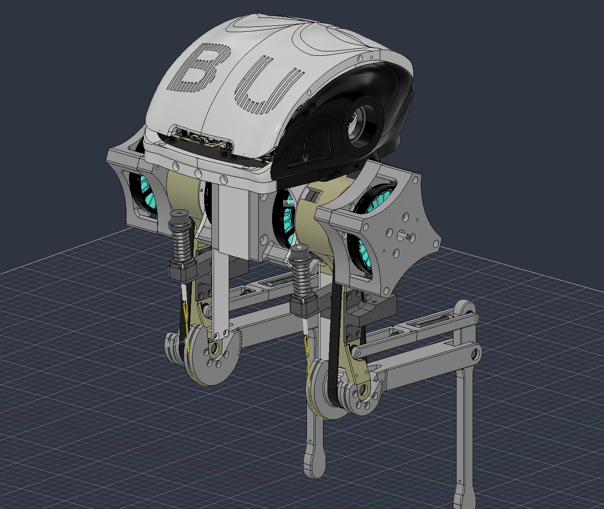
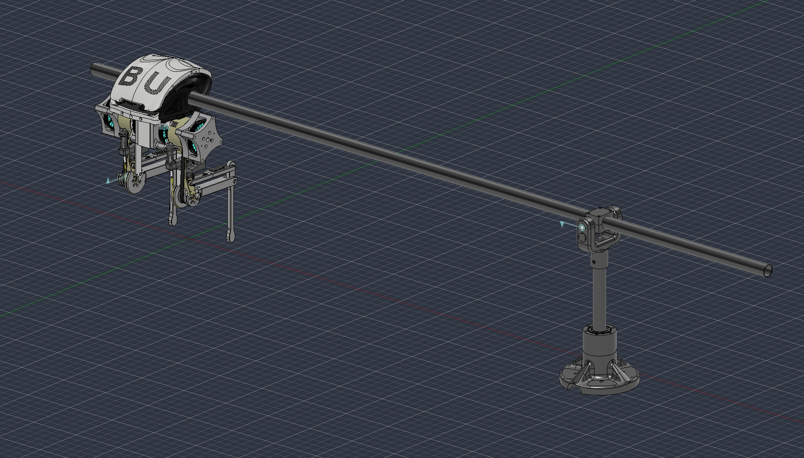
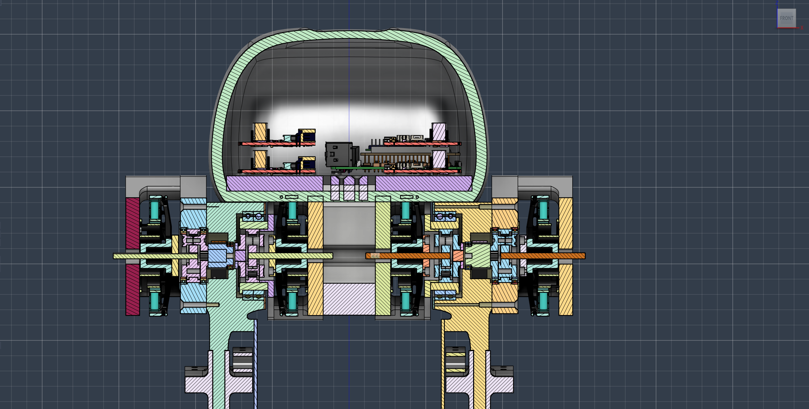

STATUS
in progress
A boom-constrained, 2-DOF-per-leg planar bipedal robot with a passive parallelogram leg linkage, built for my MSc dissertation. Custom mechanical design, ROS2 (Jazzy) software stack, ODrive/CAN torque-mode actuation, and a from-scratch inverse-kinematics and gait control system, currently validated single-leg on a fixed test stand.
PiB is a planar bipedal robot constrained to move in a vertical plane via a boom, pivoting around a central mast. Its architecture matches the canonical RABBIT platform from academic literature: a point-foot, underactuated biped, the platform on which Hybrid Zero Dynamics (HZD) was originally developed and validated. Matching that mechanical lineage keeps that control theory reachable as a long-term goal, even though the current control approach is more direct (see Control Strategy below).
Each leg has 2 actuated degrees of freedom: hip (swing, X-axis, ±90°) and knee (bend, X-axis, −8.9° to +43.3°), both rotating about the boom's sagittal axis. A passive parallelogram 4-bar linkage keeps the foot parallel to the ground through the full knee range with no extra actuator: as the knee bends, a mimic joint on the parallel rod cancels the rotation automatically.


All structural components are 3D printed. The torso houses the hip motors and central electronics; the most recent revision (below) reworks the outer shell for a cleaner cable path and a stiffer motor mount interface. Motor placement at the knee is proximal (motor body near the hip) to reduce the leg's distal inertia and keep the mass distribution favourable for swing dynamics, a decision informed directly by the RABBIT literature.
Physical parameters, measured from the current build:

Each of the four joints is driven by its own single-axis ODrive S1 controller, addressed by CAN node_id (0–3) over one shared bus at 1 Mbps: there's no axis1 to reference the way a dual-axis board would have. Motors are T-Motor MN7005-32 KV115 units (24N28P → 14 pole pairs). Joint position uses CUI AMT21 absolute encoders, which remember true physical position across power cycles once a one-time software zero calibration has been run.
The vendored odrive_ros2_control driver declares a gear_ratio parameter in the URDF's <ros2_control> block, but silently never applies it: it treats the position command/state interface as raw motor-shaft radians, 1:1. Sent straight through, any joint-space angle moves the real joint by only 1/gear_ratio of what was intended, and any position read back is the raw motor-shaft angle, not the joint angle.
Rather than patch the vendored C++ driver, the fix lives in one place in Python: gear_ratios.py converts joint angle ↔ motor-shaft radians for every node that talks to real hardware, gated by a use_motors flag (simulation has no such quirk, so converting there would be wrong). A read-side counterpart, joint_state_corrector.py, republishes a gear-ratio-corrected /joint_states_corrected topic so RViz shows real joint angles instead of raw motor-shaft values.
The ROS2 workspace is structured across four packages: biped_description (URDF, meshes, Gazebo world, RViz config, ros2_control definitions), biped_control (inverse kinematics, calibration, gear-ratio handling), biped_gait_generation (the joint-space walking gait state machine), and ros_odrive (the third-party ODrive driver, vendored from odriverobotics/ros_odrive rather than pulled in as a submodule).
Gazebo Harmonic provides the physics simulation environment, with ros2_control as the hardware abstraction layer: the same controller code runs in simulation and on hardware by swapping the interface plugin. One caveat: Gazebo's default DART physics engine doesn't support mimic constraints, so the parallelogram's mimic joints dangle freely in Gazebo even though RViz (via robot_state_publisher) handles them correctly.

The leg is a 3R planar arm with a parallelogram constraint (θankle = −θknee), which collapses to an equivalent closed-form 2R problem, solved analytically rather than through a general-purpose IK solver:
cos(φ2) = (py² + pz² − L1² − L2²) / (2·L1·L2)
θhip = atan2(py, −pz) − atan2(L2sinφ2, L1+L2cosφ2)
solve_ik() raises an exception for any target outside the joint limits or physical reach: this is the project's core safety net, relied on by every node that builds a trajectory.
Walking is currently a joint-space gait state machine (single_leg_gait.py) running on one leg on a fixed test stand: linear interpolation between four hand-specified waypoints (touchdown → push → lift-off → swing → touchdown), validating the joint motion pattern and timing rather than full body dynamics or ground-reaction forces. Before every calibration or gait run, the AMT21's absolute position is compared against the expected pose and a persistent per-joint zero offset (stored outside the repo, since it's hardware calibration state, not source) keeps that physical pose reading as zero across power cycles.
What's built and verified: closed-form leg IK, per-joint hardware calibration with direction/offset verification, the gear-ratio conversion layer, and a single-leg joint-space gait cycle on the fixed stand. What's next, in the order it's being tackled:
The longer-term dissertation goal is still the original one: demonstrating dynamic circular walking on the boom and comparing a classical Hybrid-Zero-Dynamics controller against reinforcement learning under shared metrics, once the joint-space groundwork above is solid.
Earlier design iterations and reference angles. More photos from the lab, and additional test footage, to be added here as the build progresses.